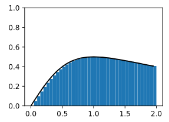
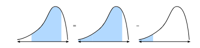
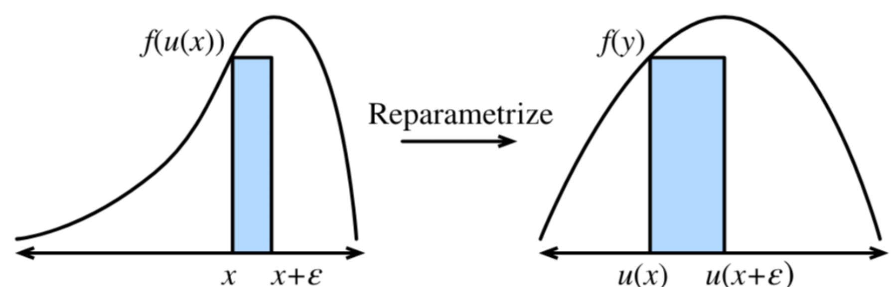

积分微分学
本部分建立对积分的完整认知——它不仅是求面积的工具，更是微分的逆运算，是高维空间中体积累积与坐标变换的核心语言。我们将从几何直观出发，严格推导微积分基本定理，再自然过渡到换元法、多重积分与雅可比行列式。
定积分的几何解释
假设有一个在区间 [a,b] 上非负的连续函数 f(x) \geq 0。一个古老的问题是：函数图像 y=f(x) 与 x 轴之间，从 x=a 到 x=b 所围成的区域面积是多少？
例如，对于著名的高斯函数（钟形曲线）：
f(x) = e^{-x^2}
我们想求它在 [-2, 2] 上与 x 轴围成的面积：
\text{Area} = \int_{-2}^{2} e^{-x^2}\, dx
这个符号 \displaystyle \int_a^b f(x)\,dx 就是定积分（Definite Integral）。
由于边缘是弯曲的，我们无法直接用初等几何公式。核心思想是分割—近似—求和—取极限：
分割：将区间 [a,b] 切成 N 个小区间，每个宽度为 \Delta x = \frac{b-a}{N}。
近似：在第 i 个小区间内任取一点 x_i，以 f(x_i) 为高、\Delta x 为宽作矩形，其面积为 f(x_i)\Delta x。
求和：所有矩形面积之和（称为黎曼和）近似总面积：
A \approx \sum_{i=1}^{N} f(x_i)\,\Delta x
取极限：当分割越来越细（N\to\infty，即 \Delta x \to 0），矩形条带的顶部越来越贴合曲线，误差趋于零。
于是得到定积分的严格定义：
\boxed{\int_a^b f(x)\,dx = \lim_{\Delta x \to 0} \sum_{i=1}^{N} f(x_i)\,\Delta x}
具体情况如图所示：
积分，就是把连续变化的东西拆成无限小的部分，再全部累积起来。
这里的 dx 象征着那个”无限小的宽度”，f(x)\,dx 象征着”无限小的面积微元”。
微积分基本定理
如果每次积分都要算极限求和，那将极其繁琐。微积分基本定理（Fundamental Theorem of Calculus, FTC）告诉我们：积分可以通过”找原函数”来计算，从而把困难的极限问题转化为相对容易的代数问题。
固定下限（例如 0），让上限动起来，定义一个关于 x 的函数：
F(x) = \int_0^x f(y)\,dy
几何上，F(x) 表示从 0 到 x 的”累积面积”，因此也称为面积函数。
第一基本定理：F'(x) = f(x)
定理：若 f 在包含 [0,x] 的区间上连续，则 F(x) 可导，且
F'(x) = f(x)
即面积函数的导数，恰好是被积函数。
以下为一个小的证明过程：
给 x 一个极小增量 \varepsilon，考察 F(x+\varepsilon) - F(x)：
\begin{cases} F(x) = \displaystyle\int_0^x f(y)\,dy \\[10pt] F(x+\varepsilon) = \displaystyle\int_0^{x+\varepsilon} f(y)\,dy \end{cases}
两式相减：
F(x+\varepsilon) - F(x) = \int_x^{x+\varepsilon} f(y)\,dy
当 \varepsilon 极小时，区间 [x, x+\varepsilon] 上的 f(y) 几乎不变，近似等于 f(x)。于是该积分近似于一个矩形的面积：
\int_x^{x+\varepsilon} f(y)\,dy \approx \varepsilon \cdot f(x)
两边同除以 \varepsilon 并令 \varepsilon \to 0：
\lim_{\varepsilon \to 0} \frac{F(x+\varepsilon) - F(x)}{\varepsilon} = f(x) \quad \Longrightarrow \quad F'(x) = f(x)
这也写作：
\frac{d}{dx}\int_0^x f(y)\,dy = f(x)
关键洞察：微分是”看瞬时变化率”，而积分是”看累积总量”。面积函数在 x 处的瞬时变化率，正好等于该点处曲线的高度 f(x)。
第二基本定理：牛顿—莱布尼茨公式
既然 F'(x) = f(x)，我们称 F 是 f 的一个原函数（Antiderivative）。若 F 是 f 的任意一个原函数，则：
\boxed{\int_a^b f(x)\,dx = F(b) - F(a)}
注意：定积分计算时，原函数中的任意常数 C 会被抵消：
\left[F(x)+C\right]_a^b = \bigl(F(b)+C\bigr) - \bigl(F(a)+C\bigr) = F(b) - F(a) 如下图所示：
Eg:
| 被积函数 | 原函数 | 定积分结果 |
|---|---|---|
| n y^{n-1} | y^n + C | \displaystyle\int_0^x n y^{n-1}\,dy = x^n |
| e^y | e^y + C | \displaystyle\int_0^x e^y\,dy = e^x - 1 |
结论：微分 \Longleftrightarrow 积分，二者互为逆运算(在相差一个常数的意义下，因为常数求导为0)。
换元法
与求导一样，积分中也有一套对应的运算规则：
| 微分 | 积分 |
|---|---|
| 乘法法则 | 分部积分 |
| 链式法则 | 换元法 |
| 线性性质 | 积分线性性 |
其中，换元法（Substitution Rule）是处理复合函数积分的核心工具，它本质上是微分链式法则的逆运算。
我们先简单介绍一下分部积分与积分线性性，对于分部积分，主要源自于微分的(uv)'=u'v+uv'对两边做积分处理，我们可以得到： \int u dv=uv-\int vdu 积分线性性就更简单理解了，即： \int_a^b[k_1f(x)+k_2g(x)]dx=k_1\int_a^bf(x)+k_2\int_a^bg(x)
其中，换元法（Substitution Rule）是处理复合函数积分的核心工具，它本质上是微分链式法则的逆运算。
从不定积分说起,复合函数的积分:
首先定义一个积分函数：
F(x) = \int_0^x f(y)\,dy
现在考虑：如果在 F(\cdot) 中，输入的不是 x 而是 u(x)，即 F(u(x))，它怎么变化？
由链式法则：
\frac{d}{dx}F(u(x)) = \frac{dF}{du} \cdot \frac{du}{dx}
因为 \displaystyle \frac{dF}{du} = f(u)，所以：
\frac{d}{dx}F(u(x)) = f(u(x)) \cdot u'(x)
两边对 x 积分（从 0 到 x）：
F(u(x)) - F(u(0)) = \int_0^x f(u(y))\,u'(y)\,dy
左边根据定义就是 \displaystyle \int_{u(0)}^{u(x)} f(y)\,dy，因此：
\int_{u(0)}^{u(x)} f(y)\,dy = \int_0^x f(u(y))\,u'(y)\,dy
将积分变量 x 的上下限改为一般形式 [a,b]，得到定积分换元公式：
\boxed{\int_{u(a)}^{u(b)} f(y)\,dy = \int_a^b f(u(x))\,u'(x)\,dx = \int_a^b f(u(x))\,du(x)}
直观理解：为什么多出一个 u'(x)？
形式上看，令 y = u(x)，则 dy = u'(x)\,dx，代入即得：
\int f(y)\,dy = \int f(u(x))\,u'(x)\,dx
几何解释——面积微元的伸缩：
- 原坐标下：面积微元是 f(y)\,dy
- 换到新坐标 y = u(x)：则 dy = u'(x)\,dx
- 新坐标下的面积微元：f(u(x)) \cdot u'(x)\,dx
u'(x) 描述了坐标变换时，长度微元的伸缩比例。如果 u'(x) > 1，说明新坐标被”拉伸”了，同样的函数值需要乘以更大的宽度因子来保持面积不变。且积分上下限也要跟着变动。
我们可以如图简单理解一下：
例：设 f(y) = 1，u(x) = e^{-x^2}，验证换元公式。
步骤 1：求导 \frac{du}{dx} = -2x e^{-x^2}
步骤 2：代入公式 \int f(u(x))\,u'(x)\,dx = \int f(y)\,dy
因为 f(y) = 1，右边为 \displaystyle\int 1\,dy。
左边具体计算（从 0 到 1）： \int_0^1 (-2x e^{-x^2})\,dx = \int_1^{e^{-1}} 1\,dy = e^{-1} - 1
步骤 3：反向验证 若要求 \displaystyle\int_0^1 x e^{-x^2}\,dx，利用上述结果： \int_0^1 x e^{-x^2}\,dx = -\frac{1}{2}\int_0^1 (-2x e^{-x^2})\,dx = -\frac{1}{2}(e^{-1}-1) = \frac{1-e^{-1}}{2}
本节最重要的公式如下：
定积分换元公式：
\boxed{\int_{u(a)}^{u(b)} f(y)\,dy = \int_a^b f(u(x))\,u'(x)\,dx}
不定积分换元公式：
\int f(u(x))\,u'(x)\,dx = \int f(u)\,du = F(u) + C
积分符号约定
定积分不仅仅是”几何面积”，它是一种带方向的累积量。理解这一点，对后续学习曲线积分、曲面积分以及物理学中的”功”等概念至关重要。
- 积分可以为负的两种情形
情形一：积分方向反转
当积分下限大于上限时（即从右往左积分），积分值为负：
\int_a^b f(x)\,dx = -\int_b^a f(x)\,dx
例子：
\int_{e^0}^{e^{-1}} 1\,dy = e^{-1} - 1 < 0
这里 e^0 = 1，e^{-1} \approx 0.368，积分是从 1 到 0.368（从大到小），因此结果为负。这是由于积分方向改变导致的。
情形二：函数值位于 x 轴下方
当 f(x) < 0 时，即使积分方向正常（从小到大），积分值也为负：
\int_0^1 (-1)\,dx = -1 < 0
这是由于函数的值小于 0 导致的。
如果我们的目标是求函数图像与 x 轴所围成的纯粹几何面积（总为正数），则需要对被积函数取绝对值：
\boxed{A = \int_a^b |f(x)|\,dx}
这样，无论函数在轴上方还是下方，无论积分方向如何，最终得到的都是非负的实际面积。
定积分的这种”可正可负”的特性，说明它并非单纯的几何度量，而是一种有向测度（Oriented Measure）。
类比：这与行列式的性质类似——行列式表示的是”有向体积”，交换两行会变号；积分交换上下限也会变号。二者都体现了”方向”在数学度量中的重要性。
多重积分
现在将视野从一元函数推广到二元函数。考虑定义在矩形区域 R = [a,b] \times [c,d] 上的连续函数 f(x,y)。
若将 z = f(x,y) 视为点 (x,y) 处的”高度”，则二重积分：
\iint_R f(x,y)\,dA = \int_a^b\int_c^d f(x,y)\,dy\,dx
表示的是以曲面 z=f(x,y) 为顶、以矩形区域 R 为底的曲顶柱体的体积。
直观理解：可理解为将区域 R 切成无数根竖直的小方柱，每根柱子的体积为 f(x,y)\,dx\,dy，然后将所有小柱子的体积累加起来。
计算二重积分时，可以把它拆成两次一元积分，由内向外逐层计算，这称为累次积分（Iterated Integral）：
\int_a^b \left(\int_c^d f(x,y)\,dy\right) dx
先固定 x，计算内层积分 \displaystyle\int_c^d f(x,y)\,dy（得到关于 x 的函数），再对 x 计算外层积分。
Fubini 定理指出：若 f 在闭矩形 R 上连续，则积分顺序可以交换：
\boxed{\iint_R f(x,y)\,dx\,dy = \iint_R f(x,y)\,dy\,dx}
即：
\int_a^b \int_c^d f(x,y)\,dy\,dx = \int_c^d \int_a^b f(x,y)\,dx\,dy
几何直观：无论先把体积分割成沿 x 方向的”薄片”再沿 y 方向堆叠，还是沿 y 方向的”薄片”再沿 x 方向堆叠，最终得到的总体积不变。
一般地，对于 n 维区域 U \subset \mathbb{R}^n 和向量 \mathbf{x} = (x_1, x_2, \dots, x_n)^T：
\int_U f(\mathbf{x})\,d\mathbf{x}
本质上仍然是无限小区域贡献的求和。多重积分的核心思想与一元定积分完全一致——都是”分割、近似、求和、取极限”，只是分割的对象从区间变成了高维区域。
多重积分中的变量替换
许多高维积分在直角坐标系下极其困难。例如著名的高斯积分：
\int_{-\infty}^{+\infty}\int_{-\infty}^{+\infty} e^{-(x^2+y^2)}\,dx\,dy
直接计算几乎不可能，但转换到极坐标后迎刃而解。换元（变量替换）是高维积分中一个关键工具。
设有一个从新坐标 \mathbf{u} 到旧坐标 \mathbf{x} 的映射（Transformation）：
\boldsymbol{\phi}: \mathbb{R}^n \to \mathbb{R}^n, \quad \mathbf{x} = \boldsymbol{\phi}(\mathbf{u})
例如极坐标： \begin{cases} x = r\cos\theta \\ y = r\sin\theta \end{cases}
为了保证变换是”良定义的”，通常要求 \boldsymbol{\phi} 是单射（Injective，即一一对应，不会把不同点压到同一个位置，更简单的理解是，如果\Phi(x)=\Phi(y)的时候，仅当x=y的时候才成立），且连续可微。
映射 \boldsymbol{\phi} 在点 \mathbf{u} 处的雅可比矩阵（Jacobian Matrix）是所有一阶偏导数构成的矩阵：
D\boldsymbol{\phi} = \frac{\partial(x_1,\dots,x_n)}{\partial(u_1,\dots,u_n)} = \begin{bmatrix} \frac{\partial x_1}{\partial u_1} & \cdots & \frac{\partial x_1}{\partial u_n} \\ \vdots & \ddots & \vdots \\ \frac{\partial x_n}{\partial u_1} & \cdots & \frac{\partial x_n}{\partial u_n} \end{bmatrix}
其行列式 \det(D\boldsymbol{\phi}) 称为雅可比行列式（Jacobian Determinant）。
多重积分的换元公式：
\boxed{\int_{\boldsymbol{\phi}(U)} f(\mathbf{x})\,d\mathbf{x} = \int_U f(\boldsymbol{\phi}(\mathbf{u}))\, \bigl|\det(D\boldsymbol{\phi}(\mathbf{u}))\bigr|\,d\mathbf{u}}
各项含义： - 左边：在旧区域 \boldsymbol{\phi}(U) 上对 f(\mathbf{x}) 积分。 - 右边： - 被积函数变为 f(\boldsymbol{\phi}(\mathbf{u}))； - 面积（体积）微元 d\mathbf{x} 变为 \bigl|\det(D\boldsymbol{\phi})\bigr|\,d\mathbf{u}。
几何意义：|\det(D\boldsymbol{\phi})| 表示坐标变换时，单位体积微元的伸缩比例。它衡量了映射 \boldsymbol{\phi} 对局部空间的”拉伸”或”压缩”程度。
计算： I = \iint_{\mathbb{R}^2} e^{-(x^2+y^2)}\,dx\,dy
步骤 1：换元
令 x = r\cos\theta,\; y = r\sin\theta，则 x^2+y^2 = r^2。
步骤 2：计算雅可比行列式
D\boldsymbol{\phi} = \begin{bmatrix} \frac{\partial x}{\partial r} & \frac{\partial x}{\partial \theta} \\[6pt] \frac{\partial y}{\partial r} & \frac{\partial y}{\partial \theta} \end{bmatrix} = \begin{bmatrix} \cos\theta & -r\sin\theta \\ \sin\theta & r\cos\theta \end{bmatrix}
\det(D\boldsymbol{\phi}) = r\cos^2\theta + r\sin^2\theta = r
因此 dx\,dy = r\,dr\,d\theta。
步骤 3：确定新区域
整个平面 \mathbb{R}^2 对应 r \in [0, +\infty)，\theta \in [0, 2\pi)。
步骤 4：计算积分
\begin{aligned} I &= \int_0^{2\pi}\int_0^{\infty} e^{-r^2}\,r\,dr\,d\theta \\ &= \int_0^{2\pi} d\theta \cdot \int_0^{\infty} e^{-r^2}\,r\,dr \\ &= 2\pi \cdot \int_0^{\infty} e^{-r^2}\,\frac{d(r^2)}{2} \qquad (\text{因为 } d(r^2) = 2r\,dr) \\ &= 2\pi \cdot \frac{1}{2}\left[-e^{-r^2}\right]_0^{\infty} \\ &= \pi \cdot (0 - (-1)) = \boxed{\pi} \end{aligned}
副产品：由此可推出一元高斯积分 \displaystyle\int_{-\infty}^{+\infty} e^{-x^2}\,dx = \sqrt{\pi}。
积分不是“求面积的公式”，而是一种看待累积与变换的思维方式。当你理解“微分是局部的线性近似，积分是全局的累积还原，换元是坐标变换下的体积守恒”时，你就真正掌握了微积分的灵魂。